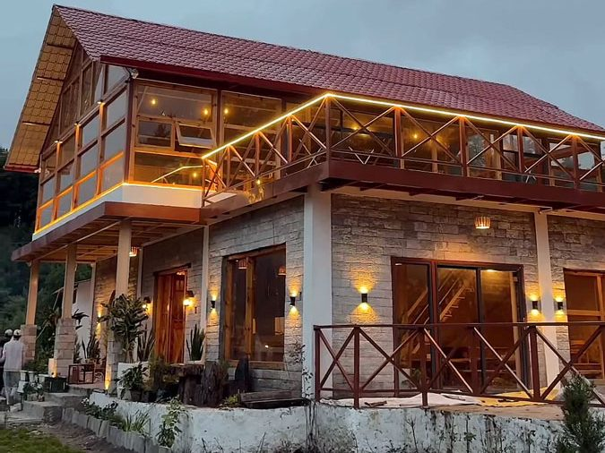
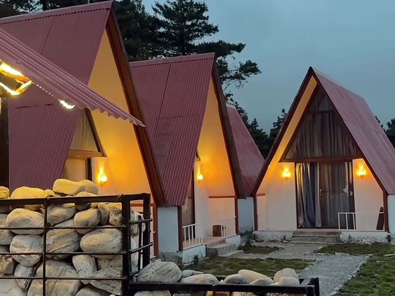

Main Building
The two-storey house at the heart of the resort, with timber balconies, stone walls and warm lighting at night.
Rates on request
Request this stayA main house and A-frame cottages in Lete village, Mustang, on the Beni–Jomsom road.
Scroll to fly through the valley.
Nepal fast bowler Karan KC walked Himalayan trails for years and kept imagining a home among the mountains. The Lete Gaun Resort is that home, opened to travellers in Mustang as a small contribution to Nepal's tourism.

The two-storey house at the heart of the resort, with timber balconies, stone walls and warm lighting at night.
Rates on request
Request this stay
Red-roofed A-frame cottages along a garden path, with pine forest behind and snow peaks beyond.
Rates on request
Request this stayDense pine forest rings the property, so the trees are right outside your door.
Red-roofed A-frame cottages with warm wall lights, set along a garden path.
A two-storey house with timber balconies, stone walls and a glass-fronted upper floor.
Snow-capped peaks rise above the valley behind the cottages. The Kali Gandaki valley here runs between Dhaulagiri and Annapurna I, with Nilgiri close by.
Reached by road, with Marpha, Jomsom and Muktinath further up the valley.
Wall lights and glowing windows give the property a calm look at night.
The resort sits below a forested mountain in the Kali Gandaki valley.
Lete is roughly 120 to 145 km from Pokhara by road, depending on the source and route. You can also fly Pokhara to Jomsom and continue by road.
Karan KC, a fast bowler for Nepal, built the resort from a long-held dream of a home in the mountains.
The Lete Gaun Resort is in Thasang-3, Lete, Mustang, on the Beni–Jomsom road in the Kali Gandaki valley.
Send a request on the Book page with your dates, number of guests and stay type. The resort confirms by phone or WhatsApp before the booking is final.
Nepal tourism information gives mid-September to mid-November as the best time for Mustang, and spring is also popular. Mustang lies in the Himalayan rain shadow, so it can be visited in the monsoon too, but landslides can block the road, so check conditions first.
By road along the Beni–Jomsom road, or by flying Pokhara to Jomsom and continuing by road. See the Getting here page for distances and tips.
On the request form, tick the things that matter to you (meals, heating, Wi-Fi, hot water, parking, power backup). The resort confirms each one by phone or WhatsApp before your booking is final.
Lete is at roughly 2,400 to 2,500 metres, so evenings are cool even in good weather. Beyond Beni the road is rough in places, and a high-clearance or 4WD vehicle is the safer choice.
Call or message us on WhatsApp at +977 980-5807476, or email theletegaunresort@gmail.com.
Send your dates and the resort confirms by phone or WhatsApp before your booking is final.